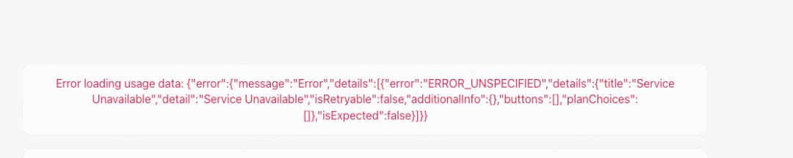
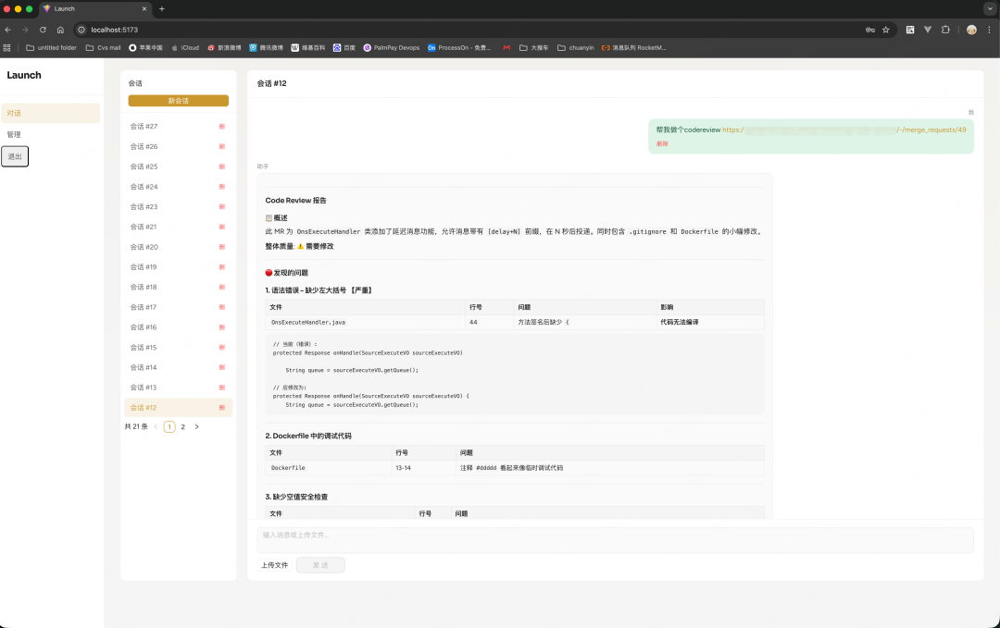
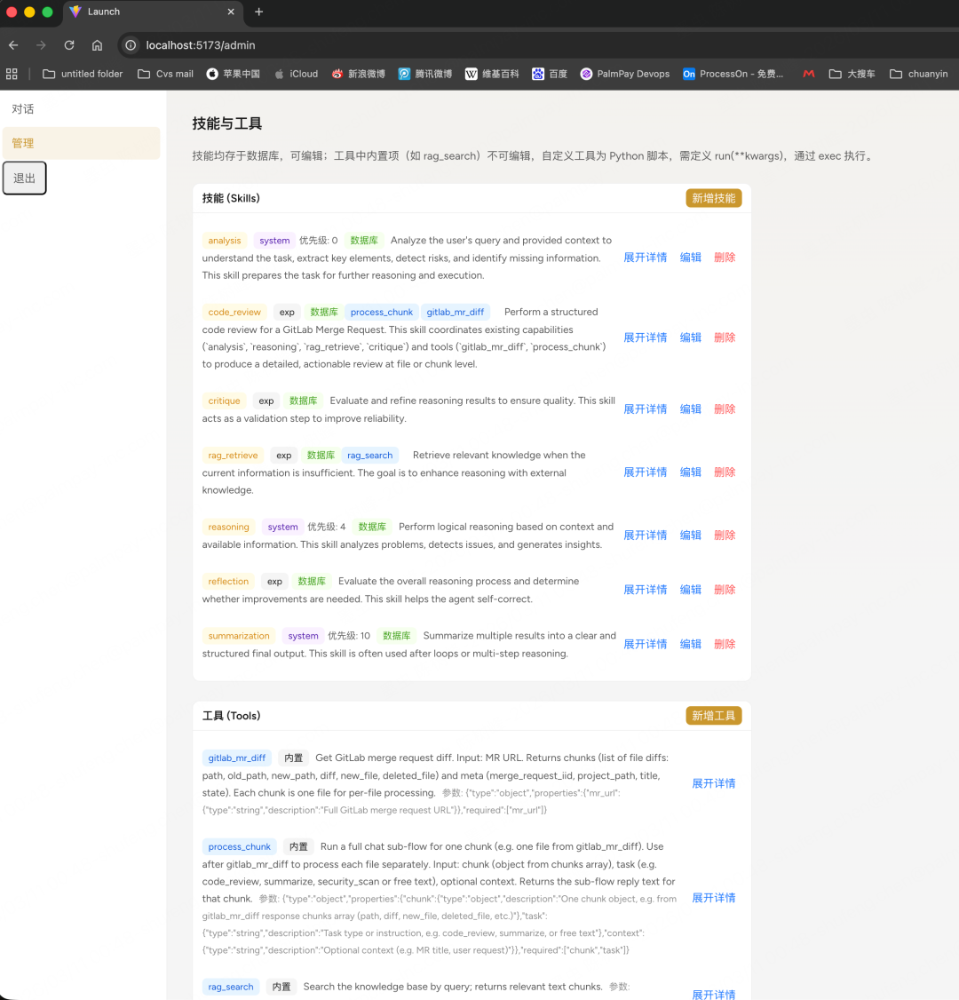
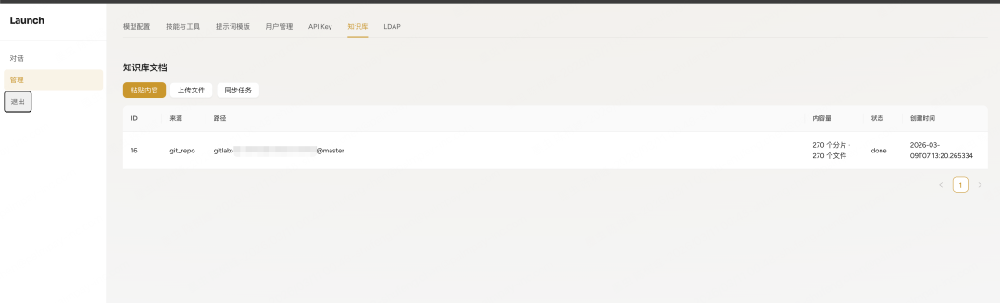

const result = llm responseswitch result:case x:do x job;case y:do y job;default :break;




User Chat Query #用户输入问题│▼Skill Selection Mode #减少token开销，指定技能├─ Manual Skill (specified by system)│ ││ ▼│ Skills to call injected into prompt #把skill核心逻辑插入prompt│└─ Auto Skill (LLM decides)#技能过多的时候，可以用描述性语言，让llm自己决定用哪个skill│▼LLM determines required skills based on query + context│▼┌─────────────────────────┐│ Reasoning Loop (multi-turn) │#拿到skill以后开始循环执行，递归执行└─────────────────────────┘│┌───────┼────────┐▼ ▼ ▼Skill: analysis Skill: rag_retrieve Skill: reasoning│ │ │▼ ▼ ▼Analyze query Tool: rag_search Generate reasoning& context Knowledge Base steps/ Vector DB#分析问题 #知识库知识自动补全prompt #重新细化步骤│ │ │└───────Context updates─────────┘│Tool Execution (optional)│▼Skill: critique #检查分析│▼Final Output (Markdown / Chat)│▼Skill： summary #总结结果│▼Return to User
USER : 帮我做一次MR/5的代码ReviewUSER : @code_review 帮我做一次MR/5 的代码ReviewUSER : 我有2个技能，[{name:code_review,desc:code review against a mr},{name:requirement_analysis,desc: analysis***}],根据{ user query： 帮我做一次MR/5 的代码Review}帮我决定用哪个技能来执行，用{'call_skill':'skillname'}的格式输出。#这里是一个细节，必须指定格式输出，不然agent解析不了skill
LLM : {'call_skill':'code_review'}AGENT ：method:skill_invoke_by_name,args:'code_review'AGENT：llm request : {messages:[{user:query + skill content}],tools:[{method:git_mr_diff,args:[{name:mr_url,type:string}]}]}
LLM ： { tool_calls: [{name: git_mr_diff, args: git@abc.com/***/1}]}
AGENT ：method: llm_prompt_build , args : {messages:[{user:query + skill content}],tool_calls:[{method:git_mr_diff,args:[{name:mr_url,type:string}],result:{****}}]}
AGENT : llm request :{messages:[{user: ****},{system:检查是否还有可以用的skill}]}
AGENT ： llm request：{ messages :[{....}]，tool_calls:[{name:git_mr_diff,args,response:[....] , }] }
AGENT : #call chatAGENT: LLM request : {messages:[{...},{type:assistant, content:***},{user:'帮我总结下'}]}